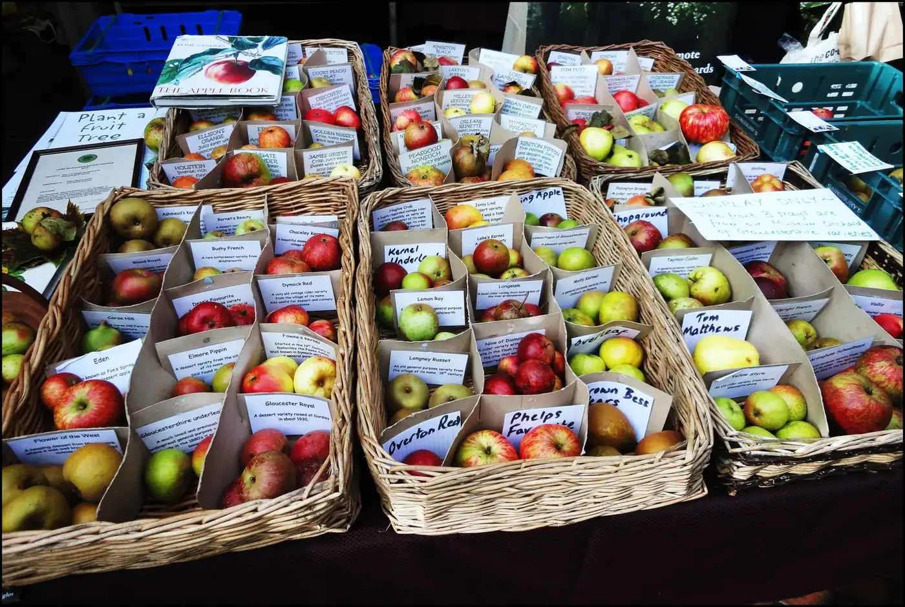

Guía de estudio · partida doble y normas del CINIF
Contabilidad con manzanas
Qué es un cargo, qué es un abono y cómo se lee una NIF, explicado como si armaras el cuaderno de un puesto de fruta. Luego resolvemos, paso a paso, el ejercicio de Distribuidora del Valle, S.A. de C.V.
Tomo I · NIF 2026
Desliza o usa las flechas para pasar los pliegos. Portada: mercado de Stroud, BazzaDaRambler, CC BY 2.0.